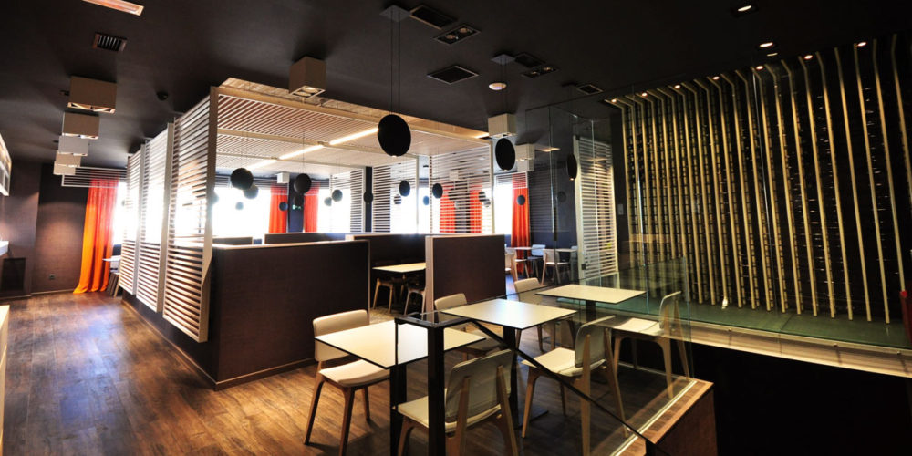
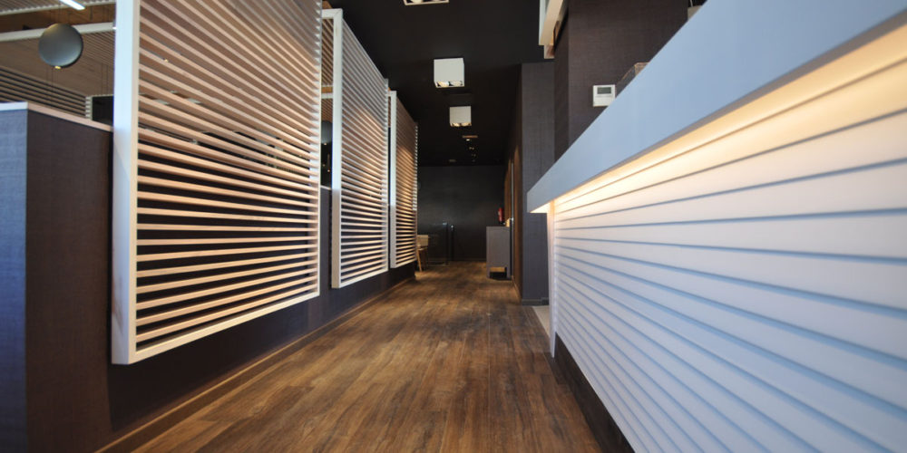

|
Diciembre 2016 |
L‘envers Gastro BarProyecto de decoración e interiorismo en restaurantes para un nuevo franquiciado de reciente nacimiento en Madrid. L´nvers nace con un concepto de gastro-bar con tapas elaboradas en planta baja y comida a la carta cuidada y con un ambiente relajado y tranquilo en planta primera. El local necesitaba un envoltorio acorde a la nueva imagen que quería transmitir. El local a reformar, aprovecha la estructura existente, para adecuar las necesidades del nuevo restaurante. Creamos un entramado de decoración a base de madera de roble barnizado y roble lacado en blanco a poro abierto en mate, combinado todo ello con malla en acero inox de Amari y lamas de madera. Suelos vinílico de madera oscura combinado con material cerámico de Porcelanosa con estética de baldosín hidráulico restaurado. La decoración e interiorismo en restaurantes de nueva apertura, necesita un plus de impulso que cualquier negocio que quiera tener exito necesita, un buen proyecto decorativo donde se estudie la iluminación, distribución, instalaciones… El logo que permite la marca de la franquicia, da el juego necesario para que la colocación de la decoración tome sentido y nos permita dar la vuelta a elementos como mesas, estantes…. Dos espacios totalmente diferenciados. La planta baja mas desenfadada, con una iluminación mas homogénea, espacio mas pensado para el tránsito rápido de público. La planta primera con una estética mas estudiada en cuanto a iluminación, zonas de estar, mobiliario mas cuidado….un espacio de comida a la carta. Como colofón final decorativo, la aparición de tejidos naturales como el yute en cortinas, papel vinilo para revestir las paredes y musgo tratado para decorar distintas zonas y darle el toque de color que el local necesita. |

 |